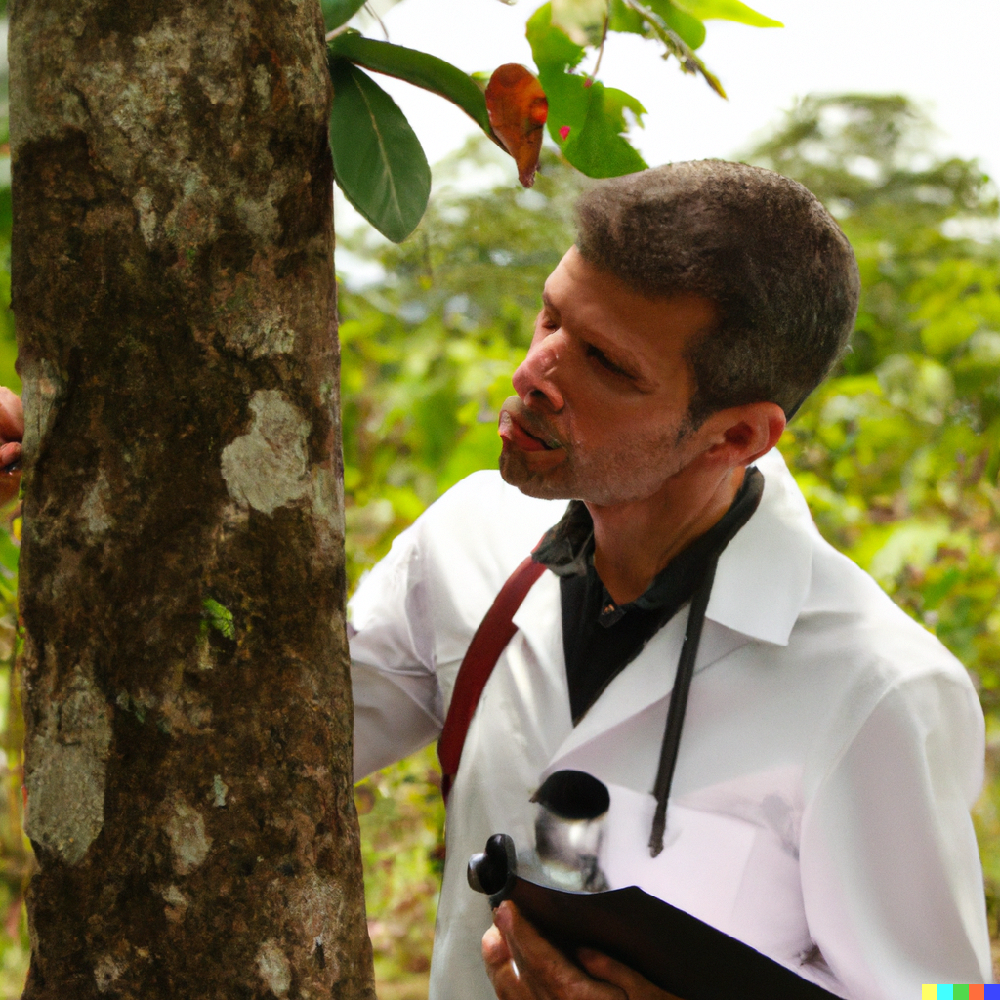

Ce projet est proposé par l’entreprise Big Datext et la mairie de Grenoble dans le cadre de l’UE Fouille de Données
et Extraction de Connaissance suivie à Telecom Nancy. Ces deux entités se sont associées pour fournir une base
de données concernant les arbres de la ville.
L’objectif du projet consiste en deux tâches de prédiction visant :
- D’une part à déterminer, à partir des données disponibles, si l’arbre a ou non un défaut.
- D’autre part, dans l’hypothèse où un arbre peut avoir plusieurs défauts, à déterminer le nombre
de défauts d’un arbre et la localisation de chaque défaut (racine, tronc, collet, houppier).
Novembre à Décembre 2022
Projet de Master 2 :
Analyse de données d’un dataset de speed dating
Ce projet est réalisé dans le cadre de l’UE Statistique pour les données de grande dimension suivie à l’École
des Mines de Nancy. Le dataset (provenant de la banque de données OpenML, et disponible
ici)
contient les données relatives à
un évènement expérimental de speed dating.
Nous y trouverons des données recueillies en amont auprès des participants sur leur profil, ainsi que des données
sur leurs impressions après chaque premier rendez-vous.
Le but de ce projet est de construire un modèle de Machine
Learning visant à prédire si une personne voudra revoir son ‘date’ ou non.

Dans ce mémoire, nous nous intéressons à la résolution numérique d’un problème
de conductivité décrit sur un domaine borné en 2 dimensions. Il s’agit
d’un problème aux limites dont l’extension en 3 dimensions intervient dans le
cadre d’une approche formulée pour la détection de tumeurs cancéreuses du sein.
Nous avons donc développé un code de maillage bidimensionnel se basant sur la méthodes des éléments, afin d'approximer
la solution à notre problème, résolu préalablement de manière analytique.
Dans ce projet, on se propose de découvrir le fonctionnement de l'algorithme Page Rank de Google.
On simulera un réseau de pages Internet reliées entre elles par des hyperliens. On implémentera ensuite l'algorithme de Puissance
itérée, et on testera ses performances (temps de calcul, efficacité).
On effectuera une comparaison de la performance de l'algorithme de puissance itérée avec un algorithme
Page Rank simplifié.